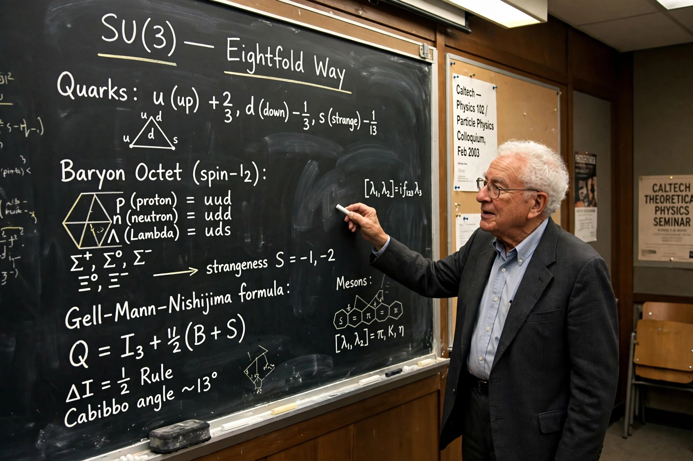

Murray Gell-Mann
| Born | 15 September 1929, New York City, US |
|---|---|
| Died | 24 May 2019 (aged 89), Santa Fe, New Mexico, US |
| Known for | Quark model, Quantum chromodynamics, Eightfold Way |
| Awards | Nobel Prize in Physics (1969) |
| Institutions | Caltech |

[Image: Photograph of Murray Gell-Mann lecturing]Murray Gell-Mann (15 September 1929 – 24 May 2019) was an American theoretical physicist who played a leading role in the development of the theory of elementary particles. He introduced the quark model (1964), the Eightfold Way classification of hadrons, and (with others) Quantum chromodynamics, and received the 1969 Nobel Prize in Physics 'for his contributions and discoveries concerning the classification of elementary particles and their interactions'.
A child prodigy who entered Yale at 15, Gell-Mann spent his career at Caltech. He was also a founder of the Santa Fe Institute and a wide-ranging polymath whose interests ran from quarks to 'plectics' — his term for the science of complexity — and to linguistics and natural history.
Particle physics
In the 1950s Gell-Mann introduced strangeness (with Kazuhiko Nishijima) to organise the proliferation of new particles, developed (with Gell-Mann–Low) the renormalisation group, and with Richard Feynman formulated the V−A theory of the weak interaction. His 1961 Eightfold Way organised hadrons into SU(3) multiplets and predicted the Ω⁻ baryon, triumphantly discovered in 1964. The same year he proposed that hadrons are built from fractionally charged quarks; with Harald Fritzsch in 1972–73 he built QCD, the SU(3) gauge theory of colour, on that foundation.
Later years
Gell-Mann wrote the bestseller The Quark and the Jaguar (1994), co-founded the Santa Fe Institute (1984) to study complex adaptive systems, and advised on everything from nuclear arms control to endangered languages. He died in Santa Fe in 2019.